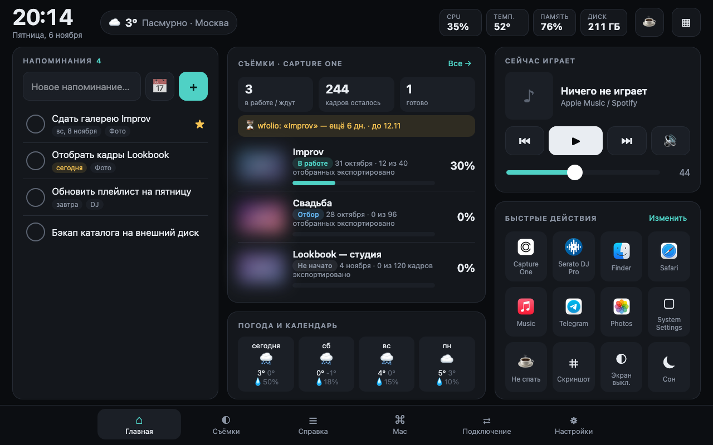
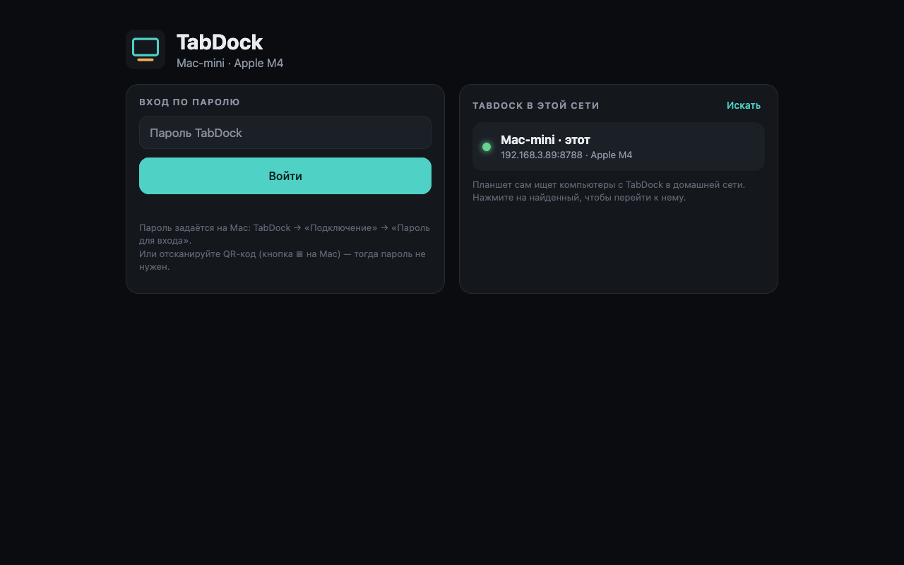
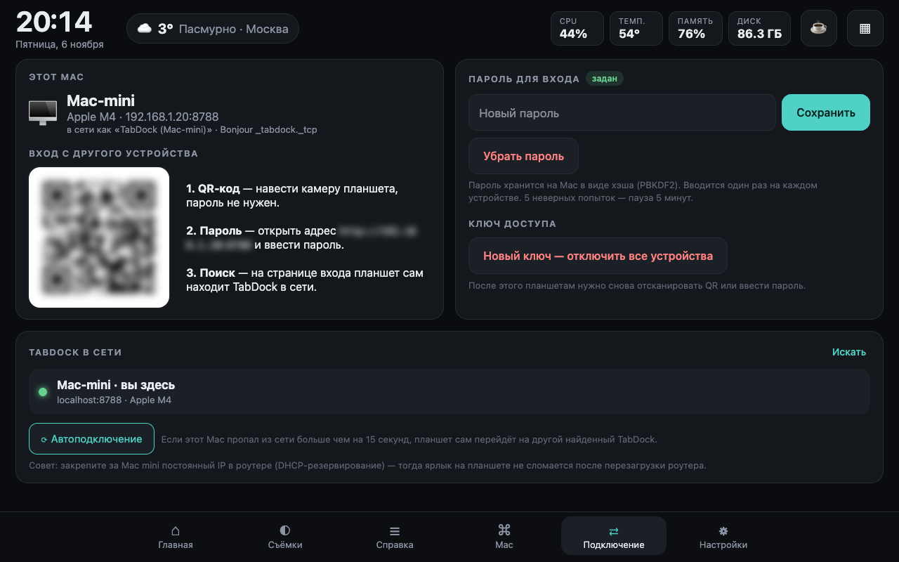
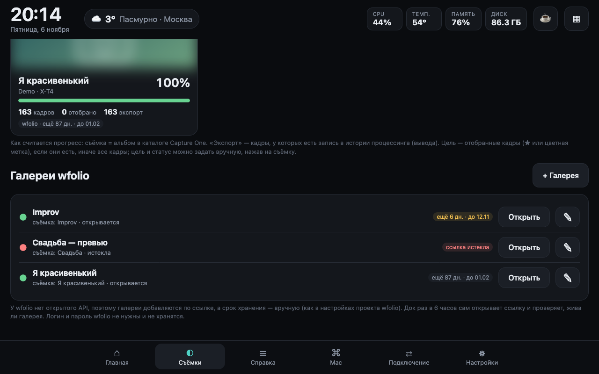

TabDock v0.2 что увидит планшет

Главная — напоминания, съёмки Capture One с прогрессом, погода, музыка, быстрые действия

Вход на планшете — пароль или выбор TabDock из найденных в сети

Подключение — QR, пароль, список серверов в сети, автоподключение

Галереи wfolio — срок хранения, жива ли ссылка, привязка к съёмке